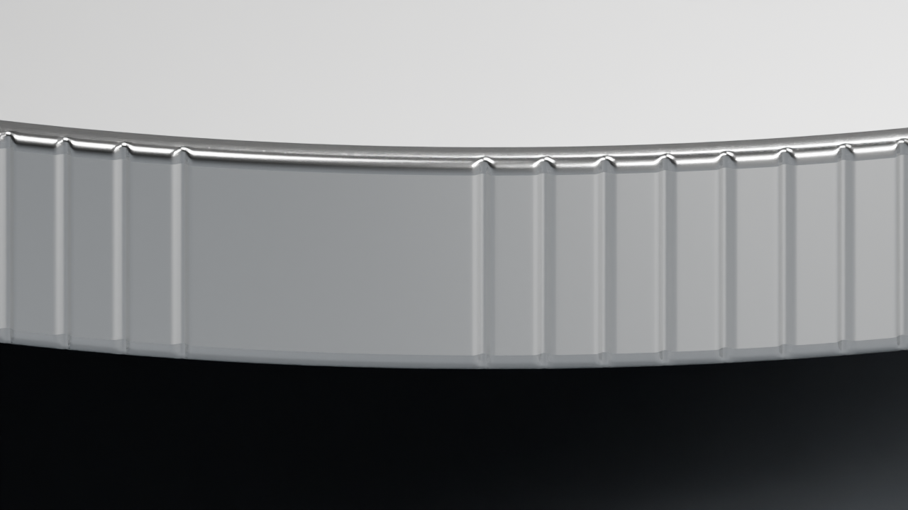

正背面艺术上下文 · 原v5稿

旧侧稿仅作为问题对照，不能继续作为几何权威。侧缘样品不是已重建的完整艺术纪念币。
40 mm币体 · 3.2 mm包边总厚 · 三种真实几何试样
这里用完整素币观察侧缘、圆肩和正背衔接；平场用于比较结构，艺术正背面见下方原稿。
B：12个周期，每段20°边刻、10°光面，共96槽。纹理与安静弧面交替；本轮建议方向，尚待整体艺术选择。

同一相机、灯光和材质比较。点击可看原图。三版均有可编辑Blender文件保存在本机研究目录。
| 设计 | 分布 | 观察重点 |
|---|---|---|
| A | 144条，连续等间距 | 传统币感、全周密度 |
| B | 12周期 × 8槽；每周期留10°光面 | 节奏、圆柱光面与整币协调 |
| C | 无槽，圆肩＋连续侧壁 | 轮廓、柔和反射 |
有槽版槽深0.10 mm、槽宽0.30 mm。数字为工作设计选择，尚未做金属压印与模具制造验证。
旧侧稿仅作为问题对照，不能继续作为几何权威。侧缘样品不是已重建的完整艺术纪念币。